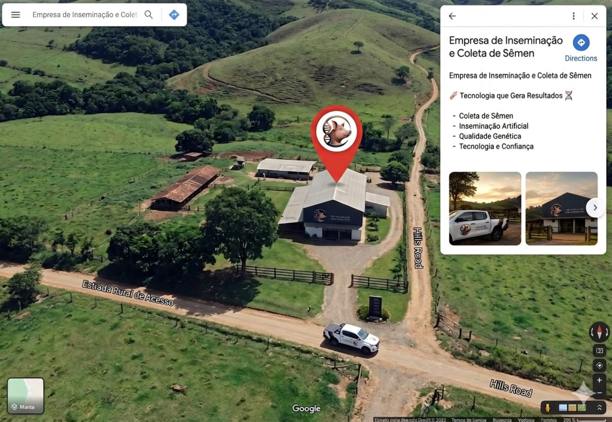

Um pouco sobre nós
A Alta Linhagem Suína é uma empresa especializada em reprodução suína e melhoramento genético, localizada no Oeste de Santa Catarina. Fundada há aproximadamente três anos, por quatro médicas veterinárias que compartilham o interesse e a dedicação à área de reprodução animal. Desde sua fundação, a Alta Linhagem Suína tem se destacado pelo compromisso com a excelência, contribuindo para o aumento da produtividade e da qualidade dos rebanhos atendidos. E atualmente somos uma referência local no segmento de reprodução suína.
Nossos serviços
- Coleta de Sêmen: Extração do material genético dos cachaços, utilizando técnicas que garantem o conforto do animal e a pureza da amostra.
- Análise de Sêmen: Avaliação laboratorial da qualidade do material coletado.
- Armazenamento do Sêmen: Diluição do sêmen em soluções protetoras, seguida pelo envase e conservação em temperatura estritamente controlada para manter as células vivas e viáveis por vários dias.
- Inseminação Artificial: Introdução técnica e segura do sêmen preparado no trato reprodutivo da fêmea em período de cio, visando a fertilização e a gestação da matriz.
Conheça nosso catálogo
DUROC


LARGE WHITE


LANDRACE


Onde nos encontrar
Bandeirante/SC, localizado no Oeste de Santa Catarina, onde a temperatura média é de 18ºC e 20ºC, sendo um clima favorável para os suínos. Localizada na porção catarinense com maior demanda na produção de suínos, com grandes investimentos voltados a suinocultura.
